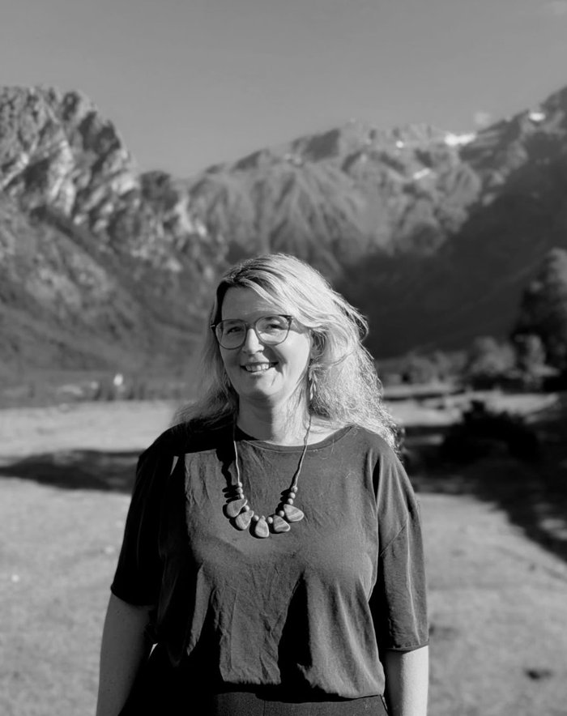

Bětka Wójcik
Certified CNVC trainer · Facilitator
Certified CNVC trainer and facilitator with over 10 years of experience, passionate about designing learning journeys and hosting brave spaces for dialogue.
Her dream of a world where everyone’s needs matter inspires and motivates her work with individuals and communities across different countries. She fell in love with Georgia even before visiting it for the first time in 2008. Since then, she has kept returning — guided by her love for the people and the land that feels like home.